Operating Documentation
Direction 5500113, Rev# 3
Discovery MR450 1.5T Service Methods
Module Version 5.0, Version Date 5/12/09
Operating Documentation |
The GE BrainWaveHW Lite Option consists of software and hardware that can be used in combination with third party hardware to present fMRI patient stimuli synchronized with MR scanning. This document describes the hardware installation for this option. The hardware consists of the BrainWave Cabinet located in the equipment room, the response system including response pads, and connecting cables. Cable runs must be made from the magnet to the Penetration Panel, from the Penetration Panel to the BrainWave Cabinet, from the Systems Cabinet to the BrainWave Cabinet, and from the BrainWave Cabinet to the Control Room.
This manual describes the installation of GEHC MR catalog number M1033BL — BrainWaveHW Lite Option.
The BrainWave hardware is shipped as a partially assembled cabinet (BrainWave Cabinet) containing 6 cardboard boxes. The contents of the cabinet and the boxes are listed in the tables below.
Table 1: BrainWave Cabinet
| Component | Qty | GE P/N |
| [Cedrus] Lumina Response Controller Box | 1 | 2394034-6 |
| [Cedrus] AC Power module for Lumina response controller box | 1 | 2394034-7 |
| 5 foot VGA Cable | 1 | n/a (part of 15” LCD Display 2363727) |
| AC Power Cable for 15” LCD Display | 1 | n/a (part of 15” LCD Display 2363727) |
| Stimulus Computer (PC) including AC power cord | 1 | 2303343-2 |
| Power strip | 1 | 2394034-11 |
Table 2: Box 1: LCD Display
| Component | Qty | GE P/N |
| LCD Display (15”) 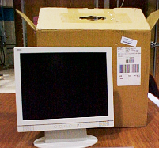 | 1 | 2363727 |
Table 3: Box 2: Shielded Cable
| Component | Qty | GE P/N |
| Shielded Cable (65’ (30m)) to be used inside of the magnet
room (penetration sub-panel to OTEC unit). 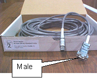 | 1 | Part of 2394034-9 cable kit |
Table 4: Box 3: Shielded Cable
| Component | Qty | Avotec P/N | GE P/N |
| Shielded Cable (65’ (30m)) for use outside of the magnet
room (penetration sub-panel to Cedrus Lumina Response Pad in the Brainwave
Cabinet)
| 1 | 758620 | Part of 2394034-9 cable kit |
Table 5: Box 4: Response Pads, Fiber Cables, OTEC Unit
| Component | Qty | GE P/N |
| R/L Response Pads/Fiber Optic Cable/OTEC Unit Assembly to be
used inside the magnet room 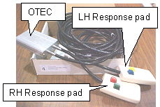 | 1 | 2394034-5 |
Table 6: Box 5: PC Compatible Keyboard
| Component | Qty | GE P/N |
| PC Compatible Keyboard to be used with the Stimulus PC in the
Brainwave Cabinet 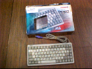 | 1 | 2394034-16 |
Table 7: Box 6: Sub-Panel and Other Components
| Component | Qty | GE P/N |
| Bulkhead Threaded Clips | 2 | 46-265067P1 |
| Y-trigger Cable | 1 | 2394034-8 |
| Penetration Sub-Panel Assembly | 1 | 2394034-10 |
| PC Compatible Mouse | 1 | 2394034-17 |
| Network Cable (75’) | 1 | 2394034-18 |
| Adhesive mount folder | 1 | n/a |
| Software key (MOD) | 1 | 5110736 |
| Documentation | 1 | n/a |
| Headphones (not shown) 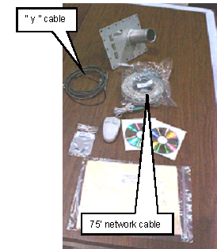 | 1 | n/a |
#2 Flat head Screwdriver
#2 Phillips Screwdriver
Utility knife
Cabinet Installation
Install BrainWaveHW Lite Cabinet
Install LCD Monitor
Install Keyboard and Mouse
Plug Power Cords into AC Power Strip
Ramp Port Installation
Installation of Additional BrainWaveHW Lite Cables
Power Up Procedure and Hardware System Checks
Illustration 1: Interconnect Diagram, Excite II, LX, Pre-LX/AW Installations
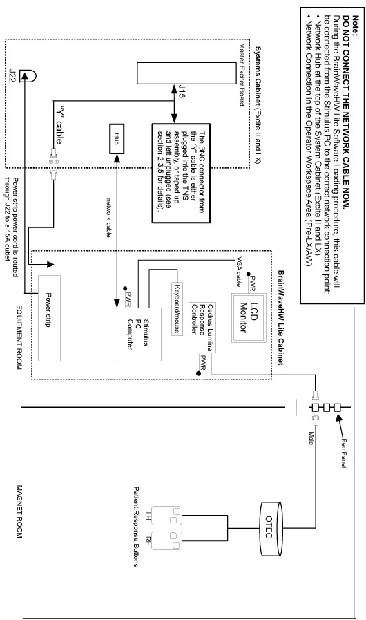
Illustration 2: Interconnect Diagram, MR750/MR450 Installations
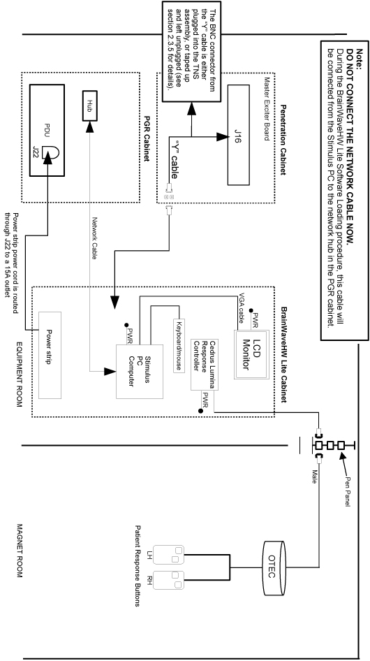
The cabinet must be installed in the equipment room and close to the Systems Cabinet. The BrainWaveHW Lite option’s power and trigger comes from the Systems Cabinet for pre-MR750 systems, or from the Pen Cabinet for MR750 systems.
Locate BrainWaveHW Lite Cabinet. Standard lengths (15 feet) of power strip cord and sub-D cable (60 feet) from BrainWaveHW Lite Cabinet to Systems cabinet for pre-MR750 systems or Pen Cabinet for MR750 should be considered, as well as customer preferenceLocate BrainWaveHW Lite Cabinet. Standard lengths (15 feet) of power strip cord and sub-D cable from BrainWaveHW Lite Cabinet to Systems Cabinet should be considered, as well as customer preference.
Level the BrainWaveHW Lite Cabinet.
Open and verify the contents of boxes 1 through 6.
Illustration 3: BrainWaveHW Lite Cabinet
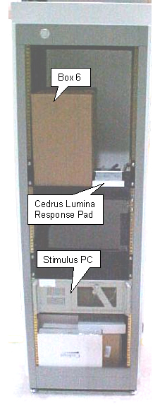
Unpack the LCD monitor (2363727) from Box 1.
Find the monitor brackets installed in the BrainWaveHW Lite Cabinet (see Illustration 4). Loosen 1 screw in the left monitor bracket and remove the other 3 screws. Rotate this bracket away from the center of the cabinet.
Illustration 4: Monitor Brackets (cabinet front view)

Loosen the screws in the right monitor bracket, and slide the monitor base under the right monitor bracket.
Rotate the left monitor bracket over the base of the monitor. Re-install the 3 screws removed in step 2, and then tighten all screws on the left and right monitor brackets see Illustration 5).
Illustration 5: Monitor Brackets with Monitor Installed (cabinet rear view)
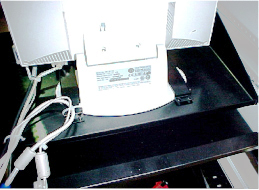
Install the DC power cable and the VGA cable into the monitor. These cables are loosely tie-wrapped to the monitor shelf. Note that the other end of this VGA cable may be connected to the rear of the computer now for installation testing, but will typically be connected to 3rd party video equipment after the 3rd party equipment is added to the cabinet (see Illustration 6).
Illustration 6: Monitor DC Power Cable and VGA Cable
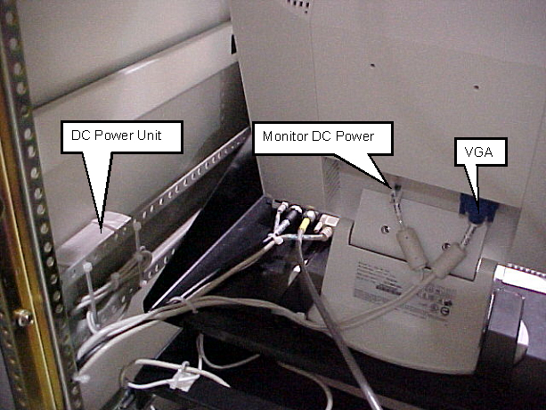
Remove tape at front of BrainWave Cabinet restraining slide-out shelf.
Unpack keyboard and mouse from Box 6 and place on slide out shelf (see Illustration 7).
Illustration 7: Keyboard and Mouse on Slide-out Shelf

Route keyboard and mouse cables straight back and down to computer.
Plug keyboard and mouse connectors into PC.
Route excess cable down the left-hand side of the cabinet. Loosely tie-wrap the cables away from the shelf slides to prevent the cables from being damaged. Insure that there is enough slack in the cables to allow the shelf to slide out all the way.
Make sure the AC plugs for the Stimulus PC and the Monitor are inserted into the AC Power Strip at the bottom of the BrainWaveHW Lite Cabinet (see Illustration 8). The transformer/plug for the Cedrus Lumina (Response System) Controller is already tie-wrapped to the AC Power Strip.
Note that there are 3 outlets in the AC Power Strip which may be used to supply power to 3rd party equipment. These 3 outlets provide 115V at 50 or 60 Hz, and can provide up to a total current of 7 Amps RMS.
Illustration 8: AC Power Strip

| NOTE: | For MR750/MR450 systems, the Ramp Port is called the Waveguide. |
The original ramp port sub-panel must be removed and replaced with the custom ramp port to allow cabling into the magnet room.
| ||||
| FATAL electric SHOCK HAZARD! | ||||
| High voltages exist AROUND THE RAMP PORT PANEL! | ||||
| Perform a System shutdown, and then Lock out and tag out
the main PDU breaker. For MR750/MR450 systems, ALSO Lock out and tag
out the Penetration Cabinet. The capacitors may have 800 volts. Wait
at least five minutes after lOTO for the capacitors to drain before
continuing this procedure. For MR750/MR450 systems, see: For earlier systems, see TEAL - Power Distribution Unit (PDU) . |
| ||||
| FATAL ELECTRIC SHOCK HAZARD! | ||||
| COLDHEAD (cryocooler compressor) PRESENTS A SHOCK HAZARD! | ||||
| Turn off, lock out, and tag out power to the coldhead before continuing this procedure. See LOTO for Heat Exchanger Cabinet (HEC). |
For MR750/MR450 systems, lock out and tag out the PGR and Penetration Cabinets. See LOTO for the PGR PDU/Gradient Subsystem and LOTO for XFRD Amplifier and PEN Cabinet (Magnet Room Electronics).
For earlier systems, lock out and tag out the main PDU breaker. See TEAL - Power Distribution Unit (PDU).
For all systems, lock out and tag out the Heat Exchanger Cabinet. This removes power from the cyrocooler compressor, which is necessary to complete this procedure. See LOTO for Heat Exchanger Cabinet (HEC).
Remove the contents of Box 6. Place all cables aside, and take the custom ramp port panel.
Install the custom ramp port panel (2394034-10) in place of the standard panel. See Illustration 9.
Illustration 9: Sub-Panel
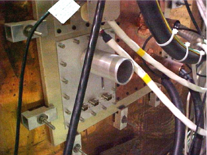
| NOTE: | If the ramp port panel has pre-existing (custom) modifications, they must be reapplied to the sub-panel before installation time. |
Attach the cable from box #3 (Avotec part number 758620) to one of the 9-pin filters at the sub-panel (see Illustration 10).
Illustration 10: Sub-Panel with Cable from Box 3 Installed
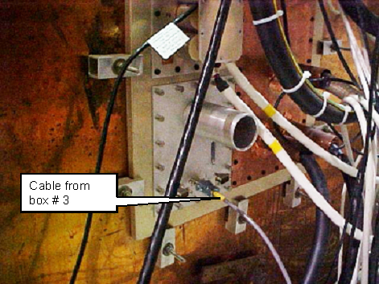
Insert the other end of the cable from step 3 into the back of the Cedrus Lumina Control Unit (see Illustration 11).
Illustration 11: Cedrus Lumina Controller with Cable Installed (rear view of BrainWaveHW cabinet)
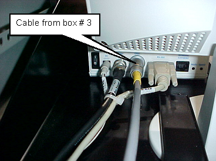
Attach the cable from box #2 to the other side of the 9-pin filter inside the magnet room at the sub-panel.
Attach the other side of the cable from box #2 to the OTEC unit inside the magnet room (see Illustration 12).
Illustration 12: OTEC Unit and Response Pads
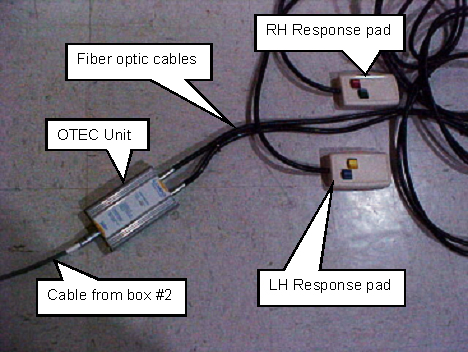
Remove the front cover of Systems Cabinet. Install cable (2394034-8) on J15 on Master Exciter board (2281038). See Illustration 13.
Illustration 13: J15 location on Master Exciter Board
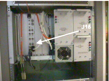
Using the screw-lock connectors (46-265067P1), mount the female end of the Y-cable to an open DB-9 access hole from inside the rear panel at the bottom of the Systems Cabinet.
Open Pen Cabinet. Install cable (2394034-8) on J16 on Exciter. This cable may enter from the top of the Pen cabinet. See Illustration 14.
Illustration 14: J16 Location on Master Exciter Board
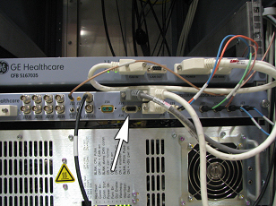
Connect the Power Cable from the top of the PGR cabinet. See Illustration 15.
Illustration 15: Power Cable from BrainWave Cabinet (MR750/MR450)
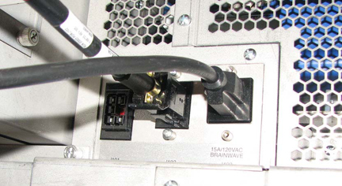
Open rear of Systems Cabinet and check for an existing cable on J31 on Tyme II board (see Illustration 16).
Illustration 16: Tyme and TNF connections

If the cable does not exist, connect the Y-cable (2394034-8) to J31 and do not BNC end of Y-cable (cover the end of the BNC cable with electrical tape). If the cable exists, remove cable and connect Y-cable to J31 of Tyme II and J1 to TNS. See Illustration 16.
Using the screw-lock connectors (46-265067P1), mount the female end of the Y-cable to an open DB-9 access hole from the inside of the rear panel at the bottom of the Systems Cabinet.
Find the long DB-9 cable and the long 3-prong power strip cable located at the bottom of the BrainWaveHW Lite cabinet (see Illustration 17). Unroll and route these two cables to the Systems Cabinet, or Pen Cabinet for MR750/MR450.
Illustration 17: Cables at the Bottom of the BrainWaveHW Lite Cabinet

Remove the base access panel at the rear of the Systems Cabinet. Route the cabinet power strip cable through the J22 panel cutout (see Illustration 18). Plug power cord into an open 15A outlet. If J22 is full, use other methods to attach power cable to SC cabinet.
Illustration 18: Systems Cabinet Rear Access Panel (systems earlier than MR750/MR450)
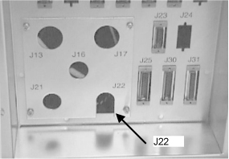
Reinstall access panel to Systems Cabinet I/F.
| NOTE: | Other uses of the 15A outlets are non-standard and should be evaluated for overall demand. The BrainWave option requires approximately 10A (steady state - assume 15A power-up demand). If there are other pre-existing users of 15A power, and all the 20A outlets are unused, the BrainWave option may be plugged into an open 20A outlet instead. |
Insert the other cable that was routed to the Systems Cabinet into the DB-9 access hole in the rear panel of the Systems Cabinet. This is the same access hole which was chosen for the female end of the “Y” cable in step two above (see Illustration 19). In Illustration 19, J60 was chosen.
For MR750, connect the 9-pin cable to Exciter J16 in the Pen cabinet.
Illustration 19: Pen Wall
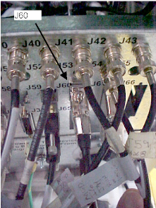
Run the provided network cable between the Stimulus PC Network output and the Systems Cabinet Hub located at the top of the SC cabinet. Note that the cable should not be connected at this time. The cable will be connected after the software load. See Illustration 20 and Illustration 21.
Illustration 20: SC Cabinet Network Connection
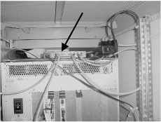
Illustration 21: Stimulus PC Network Connection

Connect one end of Ethernet cable to the Ethernet hub that is inside of the Duplex. See Illustration 22.
Illustration 22: Duplex Network Connection

Route the other end of the Ethernet cable to the Stimulus PC. See Illustration 21. Note that the cable should not be connected at this time. The cable will be connected after the software load.
Route Ethernet cable to MR750/ MR450 Power Cabinet.
Connect Ethernet cable to any open port on the Ethernet hub. See Illustration 23.
Illustration 23: Ethernet Hub
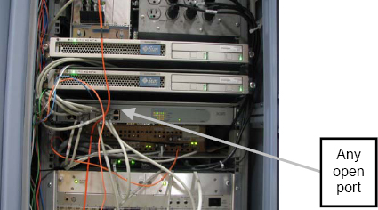
Route the other end of the Ethernet cable to the Stimulus PC. See Illustration 21. Note that the cable should not be connected at this time. The cable will be connected after the software load.
To temporarily go to the Windows Desktop, press <Esc>. The PXE will automatically return to “Idle” state after a time out.
To exit PXE and go to the Windows Desktop, press [Shift-Esc].
To start PXE, click the Launch BrainWave PXE desktop icon. The “Idle” screen will display on the monitor.
Press the Response Pad buttons in the magnet room, and have an independent observer at the BrainWave Cabinet observe the R/G/B/Y LEDs on the Response Interface box respond accordingly. See Illustration 24. If the LEDs do not respond correctly:
Verify continuity between the Response Pads and the controller:
Check that power is reaching the Response Interface box from the cabinet power strip
Check that the response fiber optic cable is properly connected at the Response Interface box and the Response Pad assembly, as well as at the mating connection
If LEDs do not light, check the cabling between the Response Pads in the magnet room and the controller in Brainwave cabinet
Illustration 24: Response Pad LEDs
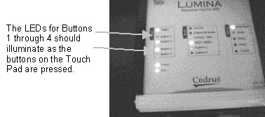
On the Stimulus PC start the comtest program by opening Windows Explorer then selecting: C:\Program Files\Sensor Systems\NeuroActivator 1.050W\comtest.exe. A window will appear. Press the four response pad buttons in the magnet room.
The following numeric values should appear:
| Blue | Number 49 |
| Yellow | Number 50 |
| Green | Number 51 |
| Red | Number 52 |
This verifies communication from the Response Pads in the magnet room, to the controller box, and then to Stimulus PC. If there is no response on the PC, check cabling between the Control Box and the PC.
On the Stimulus PC, start the comtest program by opening Windows Explorer then selecting: C:\Program Files\Sensor Systems\NeuroActivator 1.050W\comtest.exe. A window will appear.
Set up for an fMRI scan using the following parameters:
| Patient Position | Supine |
| Patient Entry | Head first |
| Coil | Standard Head coil |
| Plane | Axial plane |
| Mode | 2D |
| Pulse Sequence | Gradient Echo EPI |
Select fMRI imaging option.
Click on the fMRI Screen (see Illustration 25) in the middle of the monitor and enter the parameters noted below. Click [Accept] when done.
Illustration 25: fMRI Screen
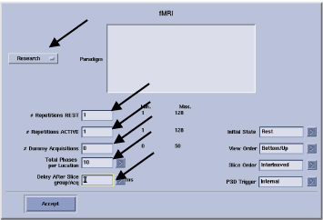
Enter the parameters show in Illustration 26.
Illustration 26: fMRI Screen
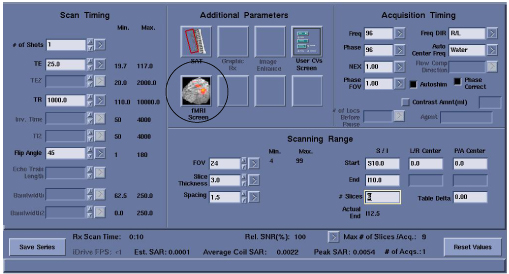
Auto Pre-scan and scan.
After the scan is complete, check the output from the com test. You should see:
A new pulse received number is 53
This verifies communication between SC cabinet and stimulus PC.
The outputs from the Response Pads and the system trigger from the Systems Cabinet are routed through the Response System Electronics and then to the serial port of the Stimulus PC.
If the BrainWave hardware does not receive the trigger from the Systems Cabinet, the paradigms will not go past the ready state.
Run the Serial Port Test (commtest.exe) on the Stimulus PC and check the inputs from the Response Pads (have someone push the buttons) and the system trigger (run a test BrainWave acquisition from the AW to start the trigger).
Signals from Response Pads will be numbers 49-52.
Signal from the system trigger will be number 53.
The Response Electronics may get “hung up”. If you suspect this is the case, try cycling the power.
If response or trigger signals are not present, trace the signals using the interconnect diagram (see Section 2.1) back through the Response Electronics.
Helpful Hints:
To stop the NeuroActivator and keep the screen from constantly displaying the 4 color boxes, right click on the NeuroActivator icon on the Start bar and select [Exit]. To restart NeuroActivator, click Start > Programs > NeuroActivator > NeuroActivator – Clinical.
The signals are sent through pins 4 and 9 of the DB-9 connector on J31 of the Tyme II board.
Table 8: BrainWave Lite FRUs
| Part Number | Description |
| 5110946 | PC and Platform Software Assembly |
| 5110767 | BrainWave Application Software CD-ROM |
| 5110968 | Patch CD for BrainWave Stimulus PC |
| 2363727 | 15" LCD Display with 5 foot VGA cable needed for computer connection (Amtran) |
| 2394034-5 | [Cedrus] Response pad assembly, left & right hand units with two buttons for each hand, includes fiber optic cable (20 ft) and optical converter box. |
| 2394034-6 | [Cedrus] "Lumina" response controller box. |
| 2394034-7 | [Cedrus] AC Power module for Lumina response controller box. |
| 2394034-9 | (FRU usage only) Kit containing all cables [Cedrus-4, -5, -6, -7, 2xxxxxx-6, 46-265057P1 (qty 2)] |
| 2394034-10 | Penetration Sub-Panel Assembly |
| 2394034-16 | PC compatible keyboard (narrow) |
| 2394034-17 | PC compatible mouse |
| 5110736 | Excite II Scanner License Key MOD for the BrainWave Hardware Option |
When upgrading from a pre-Excite to an Excite configuration, the following changes are needed:
Remove the data cable from the Systems Cabinet Tyme board, J31.
Install data cable to J15 on Master Exciter board (part # 2281038). See Illustration 27.
Illustration 27: J15 Location on Master Exciter Board
Install the provided network cable between the Stimulus PC network output and the Systems Cabinet hub located at the top of the SC cabinet. Note that the cable should not be connected at this time. The cable will be connected after the software load. See Illustration 28.
Illustration 28: Systems Cabinet Network Connection
Exit NeuroActivator.
Click Start > Settings > Control Panel > Network.
Click the Protocols tab.
Select the TCP/IP protocol.
Click [Properties].
In the IP Address field, enter the GESTIMPC IP address.
In the Subnet Mask field, enter 255.255.252.0.
Leave the Default Gateway field blank.
Click [OK].
Click [OK].
Move the mouse to dismiss the flashing square. Right-click the NeuroActivator icon (image of the brain in the lower right hand corner of the task bar), and then click [Exit].
Launch the WinNT Network configuration utility. Click Start > Settings > Control Panel . Double-click the [Network] icon.
Click the Protocols tab.
Select the TCP/IP protocol.
Click the [Properties] button.
Start a C shell.
In the shell window, enter the following command:
more /etc/hosts
In the IP Address field of the Protocols tab, enter the gestimpc IP address from the C shell.
In the Subnet Mask field, enter 255.255.252.0.
Leave the Default Gateway field blank.
Click [OK].
Click [OK].
Close the C shell window.